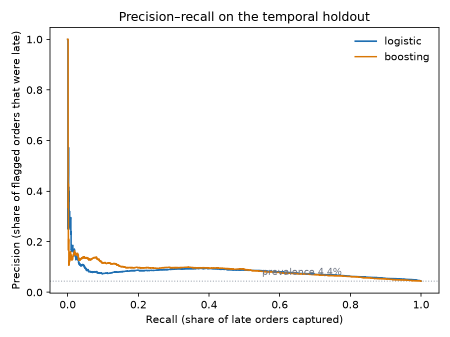
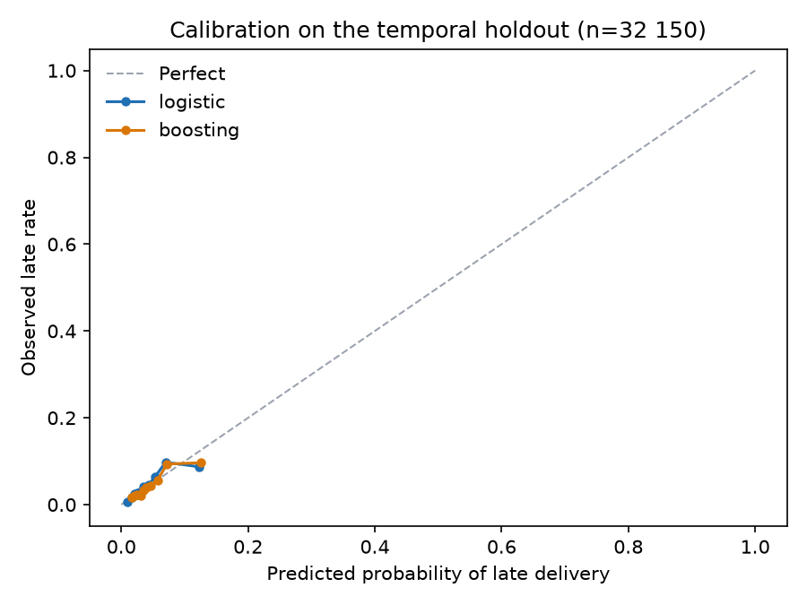

02 · Late-Delivery Model
What can be known at checkout, and what only looks predictable afterwards
This is the second project on the Olist Brazilian e-commerce dataset. The first established that late delivery is the strongest signal of customer dissatisfaction in the marketplace and that the delay concentrates on the São Paulo → Rio lane. This project asks the forward-looking question: at the moment the order is placed, can we rank orders by their risk of arriving late?
Every number below comes from projects/02-late-delivery, trained on the dbt mart mart_order_features. The trained model is not committed; the metrics and figures are, and uv run python tasks.py train rebuilds them.
Executive summary
- The ranking has signal, but it is moderate and unstable across periods. On a temporal holdout of 32,150 delivered orders, the selected logistic model reaches ROC AUC 0.708 (95% bootstrap interval 0.695–0.720) and average precision 0.091 (0.083–0.101) against a 4.42% late rate. Flagging the riskiest 10% captures 23.5% of late orders at 10.4% precision — 2.35× the base rate.
- The model class is not settled by this evidence. Logistic regression won an inner validation period on average precision, but gradient boosting scored slightly better on the final holdout (AP 0.097 vs 0.091; top-decile recall 28.4% vs 23.5%). The difference is small, and a single holdout cannot establish a reliable ranking between them. The report shows both rather than declaring a winner from the test set.
- The score is a triage queue, not a probability. The holdout late rate is 4.42%, while the selected model’s mean prediction is 6.38%. Its calibration slope is near one (1.02) but its intercept is −0.35 on the logit scale: it ranks reasonably and overpredicts the level. A deployed probability would need recalibration on recent, matured orders.
- Promise length and geography dominate. Permutation importance ranks
promise_daysfirst, thencustomer_stateandseller_state. Basket value, freight, weight, payment method and category contribute little once those are known. - The result is not a causal lever.
promise_daysis the marketplace’s own expectation of difficulty. Shortening it would not mechanically reduce lateness; Project 01’s operational question about the São Paulo → Rio crossing remains the causal one.
1. The feature contract
The model may only use information that exists when the order is placed. That is enforced by an explicit allow-list in projects/02-late-delivery/src/late_delivery/features.py, not by dropping a few obvious columns: a new mart column fails closed until someone adds it on purpose.
| Group | Features |
|---|---|
| Timing of the purchase | month, day of week, hour, weekend flag |
| The promise | promise_days (promised date − purchase date) |
| Geography | customer state, seller state, same-state flag |
| Order composition | category, item / product / seller counts, item value, freight, order value, freight share, weight, volume, photos, missing dimensions |
| Payment | payment count, maximum installments, credit card / boleto / voucher flags |
Deliberately excluded: approval time, carrier hand-off, delivery date, delivery duration, days late, the label itself, the review score, and order status. Every one of those is observed after checkout. Arrival time would predict lateness almost perfectly, which is exactly why including it would make the result worthless as a forecast and impossible to use at decision time.
order_status and delivered_to_customer_at are present in the mart only to decide whether a training label was observable at the cutoff. They are forbidden in the feature matrix and a unit test enforces that.
Two consequences are visible in the mart. seller_state is null for 1,285 orders with more than one seller, because a multi-seller order has no single origin; same_state is null for the same rows. Both are imputed inside the pipeline rather than guessed. For orders with several categories, the mart keeps the most frequent category and breaks ties alphabetically.
2. Evaluation design
Target: is_late, defined in Project 01 as the delivery date being strictly after the promised date. Orders without an observed delivery timestamp have no label and are excluded. That is not the same as “never delivered”: the 2,965 excluded orders are mostly still in flight or cancelled at the end of the dataset (1,107 shipped, 619 cancelled, 609 unavailable, 314 invoiced, 301 processing, 8 delivered with an incomplete timestamp, and a few earlier statuses).
Split: purchases before 2018-04-01 are the training period; purchases on or after that date are the test period (32,150 orders, 4.42% late). A random split would put the same months on both sides and let the model learn a specific backlog instead of a pattern.
Label maturity: a training order must have been both purchased and delivered before the cutoff. Without that rule, 3,852 orders purchased before April but delivered after it would contribute labels that did not exist on the deployment date. The mature training set has 60,474 orders and a 5.97% late rate.
Model selection: the training period is split again at 2018-01-01. Models are fitted before that date (41,202 orders) and compared on January–March 2018 (16,783 orders, 6.91% late). Average precision selects logistic regression (0.127 vs 0.101 for boosting). The selected model is then refitted on the full mature training set and evaluated once on the April–August holdout. Both models are reported on the holdout as a sensitivity check, not used to re-select.
Metrics: ROC AUC and average precision for ranking; Brier score and a calibration summary for probabilities; precision, recall and lift at 5%, 10% and 20% review capacities. The base rate is 4.42%, so accuracy is useless here — predicting “not late” for every order is 95.6% accurate.
3. Results
| Model | ROC AUC | Avg. precision | Brier | Top-10% precision | Top-10% recall | Lift |
|---|---|---|---|---|---|---|
| Logistic regression (selected) | 0.708 | 0.091 | 0.0420 | 10.4% | 23.5% | 2.35× |
| Gradient boosting | 0.705 | 0.097 | 0.0415 | 12.5% | 28.4% | 2.84× |
| Constant (training prevalence) | — | — | 0.0425 | 4.0%* | 8.9%* | 0.89×* |
| Customer-state rate | — | — | 0.0427 | 4.8% | 10.9% | 1.09× |
* A constant score cannot rank; the top-decile figures are an arbitrary slice of a tie and are shown only to make the comparison explicit.
The two models are close enough that the holdout does not distinguish them. The selected logistic model has a slightly better Brier score than the constant baseline (0.0420 vs 0.0425), but its advantage in ranking is the real result. Gradient boosting is better at the very top of the queue; logistic regression is easier to interpret and was chosen without looking at the holdout. A production team should treat the model class as an open choice and decide it with a rolling evaluation, not with this single test period.

Review capacity
| Capacity | Orders reviewed | Late orders found | Precision | Recall | Lift |
|---|---|---|---|---|---|
| 5% | 1,608 | 174 | 10.8% | 12.2% | 2.45× |
| 10% | 3,215 | 334 | 10.4% | 23.5% | 2.35× |
| 20% | 6,430 | 610 | 9.5% | 42.9% | 2.15× |
The queue degrades gracefully: doubling the review budget from 10% to 20% finds another 276 late orders, but precision falls from 10.4% to 9.5%. The right capacity is a cost decision the dataset cannot make for us.
Bootstrap intervals (500 resamples) put the 10% operating point at 9.3–11.5% precision, 21.6–25.6% recall and 2.16–2.56× lift. Those intervals describe sampling noise within this holdout; they do not cover the regime change between periods.
4. Calibration, and why the probability is not the product

The holdout’s late rate is 4.42%; the selected model predicts 6.38% on average. A logistic recalibration fit on the holdout gives an intercept of −0.35 and a slope of 1.02 (logit scale). The slope says the ranking is roughly right; the intercept says the level is too high. That is exactly what a model trained on a 5.97% late rate does when the next period runs at 4.42%.
The practical reading: the score is a ranking, not a probability. A team can use “the top 3,000 orders this month” without believing the percentage attached to any one order. If a probability is needed for a customer-facing decision, it has to be recalibrated on recent delivered orders and monitored as the regime moves. The earlier version of this analysis made the stronger claim that the model was badly miscalibrated; after correcting the label-maturity leak, the slope is close to one and the Brier score is slightly better than a constant. The level shift remains, but it is a smaller problem than it first appeared.
5. Stability across time
A single holdout can hide how much the result depends on the period. The monthly breakdown shows real variation:
| Purchase month | Orders | Late rate | ROC AUC | Avg. precision | Top-10% recall |
|---|---|---|---|---|---|
| 2018-04 | 6,798 | 4.50% | 0.780 | 0.153 | 41.8% |
| 2018-05 | 6,749 | 6.56% | 0.690 | 0.130 | 26.9% |
| 2018-06 | 6,096 | 1.16% | 0.790 | 0.056 | 35.2% |
| 2018-07 | 6,156 | 3.38% | 0.638 | 0.067 | 18.3% |
| 2018-08 | 6,351 | 6.19% | 0.611 | 0.087 | 11.7% |
Average precision tracks the late rate: June looks weak partly because there was almost nothing to find. The more concerning pattern is July–August, where AUC falls to 0.61–0.64 and the top decile captures only 12–18% of late orders.
Rolling-origin evaluation tells the same story over a longer window. At each origin the model is trained only on labels matured before that date and scored on the next three months:
| Origin | Train orders | Test orders | Test late rate | ROC AUC | Avg. precision | Top-10% recall |
|---|---|---|---|---|---|---|
| 2017-07 | 13,111 | 12,215 | 3.37% | 0.615 | 0.059 | 20.1% |
| 2017-10 | 24,833 | 17,279 | 8.69% | 0.586 | 0.111 | 14.2% |
| 2018-01 | 41,202 | 20,628 | 12.89% | 0.675 | 0.245 | 25.0% |
| 2018-04 | 60,474 | 19,643 | 4.17% | 0.752 | 0.119 | 35.1% |
The ranking is positive in every window but ranges from weak (AUC 0.59) to useful (AUC 0.75). That is the honest uncertainty around a single headline number, and it argues for monitoring rather than a one-off deployment claim.
6. What the model is using
Permutation importance shuffles one raw feature at a time and measures the drop in average precision on the holdout. Shuffling at the raw-feature level keeps a categorical variable as one concept instead of the dozens of one-hot columns it becomes inside the pipeline.
| Feature | Drop in average precision |
|---|---|
promise_days |
0.032 |
customer_state |
0.022 |
seller_state |
0.005 |
seller_count |
0.001 |
avg_weight_grams |
0.001 |
items_value |
0.001 |
freight_share |
0.001 |
avg_photos_qty |
0.001 |
The list is short and it matches Project 01’s finding. The promise is the strongest single input, and geography carries most of the rest. Basket value, freight, weight, payment method and category add almost nothing once those are known. Category and purchase month have slightly negative drops, which means shuffling them did not hurt this holdout; they are not carrying signal here.
That does not mean “widen the promise and lateness disappears”. Project 01 showed the promise is set per lane and is shorter on the São Paulo → Rio corridor than on longer routes; promise_days is partly the marketplace’s own expectation of difficulty. The model is exploiting that expectation, not identifying a lever that can be changed independently. The causal question remains the operational one from Project 01: why the crossing takes so long.
7. Limitations
- One holdout, and a moving regime. The test period contains the 2018-02/03 backlog and the abrupt improvement after it. Monthly and rolling-origin results show AUC from 0.59 to 0.75. A production decision needs a longer rolling evaluation, not this single split.
- Excluded orders are not a random sample. 2,965 orders have no observable late label. Most are in flight or cancelled at the end of the dataset. The model is evaluated on delivered orders, so it says nothing about whether a cancelled order would have been late.
- No carrier or warehouse identifier. The dataset stops at seller and state. The most plausible operational cause of lateness is therefore not in the model.
- The label is the promise, not the customer’s expectation. An order can be “late” against an aggressive promise and still arrive when the customer expected it. Project 01 shows the review gap is real, but the label inherits the promise’s definition.
- Multi-seller orders lose their origin. 1,285 orders have no single seller state. Imputation keeps them in the evaluation but weakens geography for those rows.
- Feature importance is associational. Shuffling
promise_daysbreaks its correlation with lane difficulty, so the drop is not the causal effect of changing the promise. - No cost model. The dataset has no intervention cost, refund value or margin. The capacity framing avoids inventing one; a real deployment would choose capacity by comparing the cost of reviewing an order with the cost of a late delivery.
- No deployment or monitoring. This is an offline evaluation. A production score would need drift checks on the late rate, the promise distribution and the state mix, plus a recalibration step.
8. Reproducing it
uv run python tasks.py db-up
uv run python tasks.py data
uv run python tasks.py load
uv run python tasks.py dbt-build
uv run python tasks.py traintrain writes projects/02-late-delivery/reports/model_metrics.json, the permutation-importance table and the two figures above. The feature contract, split, selection and evaluation helpers have unit tests in projects/02-late-delivery/tests/test_modeling.py, including checks that no forbidden post-purchase column enters the feature list and that in-flight training labels are excluded.